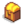

Fischen
- Eine Liste der Fische und ihre Fundorte, findest du auf der Fisch Seite.
- Einen Index der kompletten Fischsammlung, siehe Sammlungen.
- Eine Anleitung um alle Fische zu fangen, siehe Fischen Strategie.
- Siehe auch: Angelzubehör, Köder
Fischen ist eine Fähigkeit verbunden mit dem Fangen von Fischen, durch Benutzen einer Angelrute oder Krabbenreusen.
Überblick & Steuerung

Halte die Benutzen-Taste gedrückt ( auf PC,
auf PC,  auf Xbox,
auf Xbox,  auf Playstation,
auf Playstation,  auf Switch), um eine Angelrute in ein Gewässer zu werfen. Es erscheint ein Balken, der anzeigt wie weit die Angelleine ausgeworfen wird. Zum Auswerfen loslassen. Es ist möglich die Wurfrichtung der Angelleine leicht zu beeinflussen, wenn man während des Auswurfs die Bewegungstasten drückt.
auf Switch), um eine Angelrute in ein Gewässer zu werfen. Es erscheint ein Balken, der anzeigt wie weit die Angelleine ausgeworfen wird. Zum Auswerfen loslassen. Es ist möglich die Wurfrichtung der Angelleine leicht zu beeinflussen, wenn man während des Auswurfs die Bewegungstasten drückt.
Wenn ein Fisch anbeißt, wackelt der Schwimmer und ein Ausrufezeichen erscheint über dem Kopf des Spielers gefolgt von einem deutlichen Ton. Drücke die Benutzen-Taste, um das Minispiel zu starten.
Die Minispielanzeige besteht aus zwei größeren Rechtecken: einer blauen Wassertiefenanzeige zur Linken und einem Fortschrittsbalken zur Rechten. Im Tiefenmeter befindet sich ein kleineres, bewegliches grünes Rechteck, welches den Wirkungsbereich der Angelschnur anzeigt. Das Ziel des Minispieles ist es, das kleine, sich bewegende Fischsymbol auf dem grünen Rechteck zu halten, bis sich der Fortschrittsbalken zur Rechten vollständig gefüllt hat. Falls das Symbol des Fisches sich über oder unter das grüne Rechteck bewegt, leert sich der Fortschrittsbalken wieder; der Fisch entkommt, wenn der Balken zu Nichts dahinschwindet. Das Spiel verkündet einen perfekten Fang, wenn der Fisch das grüne Rechteck während des gesamten Prozesses nicht verlassen hat.
Man kann den grünen Schwimmerbalken durch rasantes, wiederholtes Drücken der linken Maustaste langsam steigen lassen. Langsameres Klicken hält das Rechteck an Ort und Stelle, wenn es sich nicht am Boden der Anzeige befindet. Klickt man nicht, sinkt er. Hält man die linke Maustaste, erreicht man eine höhere Steiggeschwindigkeit im Vergleich zum wiederholten Klicken. Es ist jedoch Sorgfalt geboten, da der Balken schnell in Schwung kommt und Zeit braucht um diesen wieder zu verlieren, weshalb man leicht über den Fisch hinausschießt und so die Fortschrittsanzeige leert.
Nach dem Fang wird der Name des Fisches und seine Größe angezeigt. Spieler können auf dem Reiter Sammlung verfolgen, wie viele Fische und deren maximale Größe sie gefangen haben.
Spezifische Verfahren
Fischarten
Die Art der Fische, die gefunden werden können, sind bestimmt durch:
- die Jahreszeit
- das Wetter (z.B. sonnig oder regnerisch)
- das Gewässer, in dem geangelt wird
- die Uhrzeit
Beispielsweise enthalten der Waldteich, der Waldfluss und der Stadtfluss je ihre eigenen Fischarten, obwohl es Überschneidungen gibt. Eine komplette Auflistung ist unter Fischen Strategie zu finden.
Um Legendäre Fische zu fangen, muss an ganz bestimmten Wasserfeldern geangelt werden. Generell spielt das spezifische Feld im Wasser keine Rolle.
Balkengröße
Der grüne Balken wird mit zunehmender Fischen-Fähigkeit größer.
Die verbesserten Angelruten (z.B., Fiberglasangel und Iridiumangel) haben keinen Einfluss auf die Balkengröße. Bei der Übungsangel jedoch bleibt der Balken immer gleich und entspricht der Fischen Stufe 5, auch wenn Stufe 5 bereits überschritten wurde.
Wurfweite
Die Fähigkeitsstufe des Spielers bestimmt die maximale Wurfweite. Bei Stufe 0 kann man maximal 3 Felder nach Süden/Norden und 4 Felder nach Osten/Westen auswerfen. Die Wurfweite erhöht sich bei Stufe 1, 4, 8 und 15 um jeweils 1 Feld (in alle Richtungen).
Das Erreichen von Fischen-Fähigkeit Stufe 15 ist mit einer Kombination aus Essen, Qi-Würze und/oder Verzaubern der Angelrute möglich.
Die tatsächliche Wurfweite beträgt einen Bruchteil der maximalen Entfernung, basierend darauf, wie weit der Minispiel-Balken gefüllt ist. Jeder Wurf, der über 99% der maximalen Weite liegt, wird durch den Text "Max" hervorgehoben. "Max"-Würfe erhalten keinen besonderen Vorteil.
Die Wurfweite ist weniger relevant als der Ort, an dem der Schwimmer landet. Längere Würfe verbessern das Fischergebnis nur dann, wenn der Schwimmer weiter vom Ufer entfernt landet und damit die Fischzone erhöht. Steht man direkt am Wasserrand, kann weiter ins Wasser geworfen werden. Dies ist auch der Fall, indem Orte mit nahegelegenen Uferfeldern vermieden werden (z.B. sollte versucht werden im breitesten Teil eines Flusses zu fischen).
Fischzone
Jedem Wasserfeld ist eine Fischzone von 0, 1, 2, 3, oder 5[1] zugeordnet, welche viele Aspekte des Fischfangs diktiert. Je weiter vom Land entfernt (alle Richtungen), desto besser ist die Zone. Das Spiel sieht die meisten begehbaren Flächen, inklusive Inseln, Pfeiler und Steinbrücken als "Land" an. Holzstegbrücken sind hier eine Ausnahme.
Wenn der Schwimmer mindestens 5 Felder vom Land entfernt landet, befindet er sich in Zone 5. Andernfalls ist die Zone um 1 kleiner als die Distanz vom nächsten Uferfeld. Karten der Fischzonen sind auf Fischen Strategie in der Sektion Distanzbilder ersichtlich. Bei der mobilen Version unterscheiden sich die Fischzonen aufgrund von Fehlern.
Höhere Fischzonenwerte bieten mehrere Vorteile:
- Die Wahrscheinlichkeit Müll zu fangen sinkt.
- Die Größe und Qualität (z.B., normal, silber oder gold) des Fisches ist wahrscheinlich besser.
- Die Wahrscheinlichkeit, dass schwer zu fangende Fische anbeißen ist etwas höher.
- Einige Gegenstände in Schätzen haben eine Zonenanforderung; insbesondere können bestimmte wertvolle Schätze nur in Zone 5 gefunden werden.
- Einige Legendäre Fische haben eine Zonenanforderung.
Die Farbe des Wassers ist kein verlässlicher Indikator für die Fischzone des Standorts. Dunkle Blautöne weisen generell auf tieferes Wasser hin, aber in einigen Fällen hat dunkelblaues (tiefes) Wasser eine Fischzone von 0 (z.B., neben dem Pier am Strand); hellblaues (flaches) Wasser kann eine Fischzone von 5 haben (z.B., am östlichen Ende des Strandes).
Fischqualität
Die Faktoren, die die Fischqualität beeinflussen (d.h., ob ein Fisch normal, silber, gold oder iridium ist) sind:[2]
- Würfe, die weiter vom Land entfernt sind führen zu qualitativ besseren Fischen.
- Fischfähigkeit (inklusive Buffs von Gerichten) erhöht die Fischqualität ein wenig.
- Eine Variabilität ist der Zufall zum Bestimmen der Qualität
- Perfekte Fänge verbessern die Qualität um eine Stufe, solange der Fisch mindestens von Silberqualität war.

Blasen
Manchmal erscheint eine Ansammlung von Blasen im Wasser. Wirft man den Schwimmer in diese, erscheinen blaue Schimmer, um anzuzeigen, dass man erfolgreich gelandet ist. Blasen haben zwei Vorteile:[3]
- Fische beißen viermal schneller an.
- Die effektive Fischzone wird bei der Bestimmung des Fischbisses um 1 erhöht, d.h. Müll wird seltener gefangen und schwer zu fangende Fische sind wahrscheinlicher; einige Legendäre Fische können näher am Ufer gefunden werden, wenn Blasen vorhanden sind.
- Die Anpassung der Fangzone gilt nur für die Fischart, die gefangen wird. Blasen haben weder Einfluss auf die Größe oder Qualität (d.h., normal, silber oder gold) noch auf Erscheinen oder Inhalte von Schätzen.
Perfekte Fänge
Das Spiel zeigt ein "Perfekt!" an, wenn der Fisch den grünen Balken nie verlässt. Perfekte Fänge bieten zwei Vorteile:
- Handelt es sich um einen Silber- oder Goldqualitäts-Fisch wird die Qualität des Fisches um eine Stufe erhöht (d.h., ein Silber-Fisch wird zum Gold-Fisch, ein Gold-Fisch zum Iridium-Fisch).
- Die erhaltene Erfahrung für den Fischfang wird um 2,4 multipliziert.
Ein perfekter Fang ist die einzige Möglichkeit, um Fische von Iridium-Qualität zu erhalten.
Energie
Bei Fischen-Fähigkeit Stufe 0 konsumiert das Auswerfen einer Angelrute 8 Energie. Jede nachfolgende Fähigkeitsstufe verringert den Energieverbrauch um je 0,1 (Im Spiel werden ganze Zahlen angezeigt, intern wird nicht gerundet). Daher zeigt das Spiel beim 10. Wurf bei Fischen Stufe 1 nur 7 anstatt 8 Energiekosten an. Bei Fischen Stufe 10 kostet (und wird auch angezeigt) das Auswerfen je 7 Energie.
Abgewinkelte Würfe
Es ist möglich die Wurfrichtung der Angelleine leicht zu beeinflussen, wenn man während des Auswurfs die Bewegungstasten drückt. Abgewinkelte Würfe können in 2 Situationen hilfreich sein:
- An einigen ungewöhnlichen Angelstellen ist es notwendig den Wurf abzuwinkeln, um weiter vom Land entfernt zu landen.
- Wenn Blasen an ungünstigen Stellen erscheinen, ist es manchmal notwendig, den Wurf abzuwinkeln, damit der Schwimmer in ihnen landet.
Zeit
- Im Einzelspieler:
- Die Zeit wird angehalten, während das Minispiel aktiv ist.
- Die Zeit wird während der Animation der Wurfweite nicht angehalten.
- Die Zeit wird während der Animation des Leinenwurfs nicht angehalten.
- Die Zeit wird während der Animation des Fischflugs nicht angehalten.
- Die Zeit wird während der Animation des Popups mit den Fischinformationen nicht angehalten.
- Wird eine Schatztruhe gefangen, wird die Zeit angehalten, während man das Inventar der Truhe durchsucht.
- Im Mehrspieler wird die Zeit nie angehalten.
- Wird man während des Fischens angegriffen (z.B. von einem Schleim während man in den Geheimen Wäldern fischt), greift der Schleim kontinuierlich an und verursacht Schaden während des Minispiels, obwohl die Uhrzeit angehalten ist.
- Während des Eisfischen-Wettbewerbs beim Fest des Eises wird die Wettbewerbszeit während des Minispiels nie angehalten.
Angelruten
Erfahrungspunkte
Mit der Angel gefangener Müll, Algen und Seetang erbringen je 3 EP, Krabbenreusen 5EP je Leerung, egal was gefunden wird. Andernfalls wird für jeden Fischfang folgende Erfahrung erhalten: [4]
EP = 3 + (3 * Fischqualität) + (1/3 * Fischschwierigkeit)
- Fischqualität = 0 für normal, 1 für silber, 2 für gold oder 4 für iridium
- Fischschwierigkeit ist ein Wert von 5-110, ersichtlich in der Spieldatei Fish.xnb.
Zum Beispiel würde man für eine normale Qualitäts-Sardine (Schwierigkeit 30) (0 + 1) * 3 + (30 / 3) = 13EP erhalten. Müll folgt ebenfalls dieser Formel mit einer Qualität und Schwierigkeit von null, weshalb nur die Basiserfahrung i.H.v. 3EP verbleibt.
EP wird mit 2,2 multipliziert, wenn auch eine Schatztruhe gefangen wird, mit 2,4, wenn der Fang "Perfekt" war und mit 5, wenn es sich beim Fang um einen Legendären Fisch handelte. Diese Multiplikationen addieren sich und werden der Reihe nach ausgeführt (erst Schatztruhe, dann Perfekt, dann Legendär).
Zum Beispiel würde man für einen perfekten Fang einer Sardine plus Schatztruhe 13 * 2,2 = 28.6 (gekürzt auf 28) EP, dann 28 * 2,4 = 67,2 (gekürzt auf 67) EP erhalten.
Ein perfekter Fang eines Gold-qualität Purpurfischs (Schwierigkeit 95) mit einer Schatztruhe würde (2+1) * 3 + (95 / 3) = 40,67 (gekürzt auf 40) Basis-EP; 40 * 2,2 = 88EP; 88 * 2,4 = 211,2 (gekürzt auf 211) EP; 211 * 5 = 1055 EP bringen.
Die Erfahrungsstufe wird sofort erhöht, nachdem eine Krabbenreuse geleert oder ein Gegenstand mit der Angelrute gefangen wird. Das Fenster für den Stufenaufstieg erscheint jedoch erst, nachdem man schlafen gegangen ist.
Die EP für einen Stufenaufstieg sind die gleichen für alle Fähigkeiten:
| Bild | Name | Kosten | Verbesserungen | Ort | Voraussetzungen |
|---|---|---|---|---|---|
| Übungsangel | Leichtere Handhabung (fängt nur gängige Fische). | Kauf von Willys Anglerbedarf | |||
| Bambusstange | Erhalt von Willy Kauf von Willys Anglerbedarf |
||||
| Fiberglasangel | Fähig Köder zu benutzen. | Kauf von Willys Anglerbedarf | (Du erhältst einen Brief wenn verfügbar) |
| Stufe | Gesamterfahrung | Gesamt: Sardinen (Keine Sterne) |
Gesamt: Gold Stern Legendärer Fisch (225EP) |
Gesamt: Krabbenreuse |
|---|---|---|---|---|
| 1 | 100 | 8 | 1 | 20* |
| 2 | 380 | 30 | 2 | 76 |
| 3 | 770 | 60 | 4 | 154 |
| 4 | 1300 | 100 | 6 | 260 |
| 5 | 2150 | 166 | 10 | 430 |
| 6 | 3300 | 254 | 15 | 660 |
| 7 | 4800 | 370 | 22 | 960 |
| 8 | 6900 | 531 | 31 | 1380 |
| 9 | 10000 | 770 | 45 | 2000 |
| 10 | 15000 | 1154 | 67 | 3000 |
*Hinweis: Die erste Stufe vom Fischen kann normalerweise nicht mit Krabbenreusen erreicht werden, da der Spieler erst ab Stufe 2 Zugriff auf Köder hat. Wenn der Spieler sich jedoch mit Linus anfreundet, gibt sein Vier-Herzen Event Zugriff auf Wilde Köder, welche zum Bestücken von Krabbenreusen bei jeder Fischen-Fähigkeitsstufe genutzt werden können.
Zusätzlich können drei Krabbenreusen bei jeder Fischen-Fähigkeitsstufe erhalten werden, indem das  Krabbenreuse Bündel im Aquarium komplettiert wird. Um das Bündel zu vervollständigen (oder Krabbenreusen zu verwenden), sind 4 vom Strand gefangene Fische und eine Krabbe als Beute aus den Minen vonnöten.
Krabbenreuse Bündel im Aquarium komplettiert wird. Um das Bündel zu vervollständigen (oder Krabbenreusen zu verwenden), sind 4 vom Strand gefangene Fische und eine Krabbe als Beute aus den Minen vonnöten.
Eine alternative Methode, um Fischen-Erfahrungspunkte zu sammeln, ist das Nutzen von Fischteichen.
Nahrung
Bestimmte gekochte Gerichte können die Fischen-Fähigkeitsstufe vorübergehend erhöhen.
| Bild | Name | Beschreibung | Zutaten | Energie / Gesundheit | Buff(s) | Buffdauer | Rezeptquelle | Verkaufspreis | |||
|---|---|---|---|---|---|---|---|---|---|---|---|
| Fischsuppe | Die beste Methode, um dich nach kalten Nächten auf See zu wärmen. |
|
|||||||||
| Matrosenteller | Das wird dich in der kalten Meeresluft warm halten. | ||||||||||
| Schneckengericht | Mit Butter durchtränkte Schnecken, bis zur Perfektion gekocht. |
|
|||||||||
| Fischeintopf | Riecht wie das Meer. Schmeckt aber besser. |
|
|||||||||
| Fisch-Taco | Riecht lecker. |
|
|||||||||
| Hummer-Bisque | Diese feine Suppe ist ein geheimes Familienrezept von Willy. |
|
|||||||||
| Ahornriegel | Ein süßer Riegel mit einer dicken Ahornglasur. |
|
|||||||||
| Meerschaumpudding | Dieser Briny Pudding wird Sie wirklich in die maritime Denkweise bringen! | ||||||||||
| Krabbencocktail | Eine üppige Vorspeise aus frisch gefangenen Garnelen. |
|
|||||||||
| Forellensuppe | Ziemlich salzig. |
|
Fischertruhen
Während des Fischen-Minispieles können ab und an Schatztruhen innerhalb der vertikalen Leiste erscheinen. Schatztruhen haben ihren eigene Fortschrittsbalken, die durch das Halten der Schwimmerleiste auf dem Schatztruhensymbol gefüllt werden  . Bei Erlangen entlohnen sie den Spieler mit einer zufälligen Bonusbeute, nachdem der Fisch gefangen wurde. Wird der Fisch verloren, wird auch die Schatztruhe verloren.
. Bei Erlangen entlohnen sie den Spieler mit einer zufälligen Bonusbeute, nachdem der Fisch gefangen wurde. Wird der Fisch verloren, wird auch die Schatztruhe verloren.
Beachte, dass im Falle eines erfolgreichen Fischfanges mit einer Schatztruhe, der gefangene Fisch neben den Schätzen im Schatzmenü angezeigt wird, wenn das Inventar voll ist.
Die Basiswahrscheinlichkeit eine Truhe zu finden liegt bei 15%. Die Wahrscheinlichkeit kann mit einem Magneten (+15%), dem Schatzjäger (+5%) und dem Piraten-Beruf (+15%) auf insgesamt 50% erhöht werden. Dies wird um die Hälfte des täglichen Glücks angepasst, wobei sie bestenfalls um 5%, mit den 1,25% des Besonderen Amuletts erhöht wird. Stärkungen von Gerichten erhöhen dies um 0,5% pro Punkt Glück.
Es können mehrere Gegenstände in einer Schatztruhe enthalten sein. Die Wahrscheinlichkeit einen Gegenstand zu finden liegt bei 60%, zwei Gegenstände 24%, drei Gegenstände 10% und vier oder mehr Gegenstände 6%. Wenn mehrere Gegenstände in einer Truhe erscheinen, kann derselbe Gegenstand in mehreren Plätzen erscheinen. Die Anzahl der in der Tabelle angegebenen Gegenstände entspricht der Anzahl, die in einem Stapel erscheinen können (z.B., höchstens ein verlorenes Buch erscheint in einem Stapel, aber zwei verlorene Bücher sind möglich, wenn jedes in einem anderen Stapel erscheint).
Glück hat einen kleinen Einfluss auf den Inhalt einer Schatztruhe. Tägliches Glück erhöht leicht die Wahrscheinlichkeit, dass verschiedene besondere Gegenstände erscheinen (wie in der folgenden Tabelle durch ≈ angegeben). Ein Glücksbuff kann die Anzahl der Gegenstände in einem Stapel erhöhen (insbesondere erhöht es die Wahrscheinlichkeit, dass stapelbare Ressourcen oder Geoden verdoppelt werden). Ein Glücksbuff ermöglicht es ebenso, dass bessere Ringe erscheinen (Magnetring anstelle von Kleiner Magnetring und Leuchtring anstelle von Kleiner Leuchtring).
Folgendes ist eine Liste aller Gegenstände, die in Schatztruhen gefunden werden können..[5] Die Spalte "Chance" gibt die Wahrscheinlichkeit pro Schatztruhe an, dass ein Gegenstand erscheint, wenn alle Anforderungen des Gegenstands erfüllt sind.
| Gegenstand | Anzahl im Stapel | Fischen-Stufe benötigt | Anmerkungen | Chance |
|---|---|---|---|---|
| 2-10 | nur im Frühling, nicht beim Strand | 16% | ||
| 1-2 | Fischzone muss 5 sein | 1,2% | ||
| 1-24 | Fischzone muss 5 sein | 19% | ||
| 1-24 | Fischzone muss 3 sein | 12% | ||
| 1-24 | Fischzone muss 3 oder weniger sein | 5-12% | ||
| 1-24 | Fischzone muss 3 oder weniger sein | 2-5% | ||
| 1-24 | Fischzone muss 3 oder weniger sein | 0,8-2% | ||
| 1-24 | 19-59% | |||
| 1 | 6+ | Fischzone muss 5 sein | 4% | |
| 1-15 | 28-42% | |||
| 2-10 | Rezept für Wilder Köder muss gelernt sein Es gibt eine 63% Wahrscheinlichkeit von 2-4 Wilde Köder, wenn zwei Fische gleichzeitig gefangen werden. |
9-10% | ||
| 1 | Nur wenn man bereits 1+ verlorene Bücher fand, und die Museums Bibliothek nicht komplett ist. | 4% | ||
| 1 | 2+ | Nur wenn man bereits 1+ Artefakte fand | 3,1-3,4%[6] | |
| 1 | 2+ | Nur wenn man bereits 1+ Artefakte fand | 3,1-3,4%[6] | |
| 1 | 2+ | Nur wenn man bereits 1+ Artefakte fand | 3,1-3,4%[6] | |
| 1 | 2+ | Nur wenn man bereits 1+ Artefakte fand | 0,8-0,9%[6] | |
| 1 | 2+ | Nur wenn man bereits 1+ Artefakte fand | 0,8-0,9%[6] | |
| 1 | 2+ | Nur wenn man bereits 1+ Artefakte fand | 0,8-0,9%[6] | |
| 1 | 2+ | Nur wenn man bereits 1+ Artefakte fand | 0,8-0,9%[6] | |
| 1 | 2+ | Nur wenn man bereits 1+ Artefakte fand | 0,8-0,9%[6] | |
| 1 | 2+ | Nur wenn man bereits 1+ Artefakte fand | 0,8-0,9%[6] | |
| 1 | 2+ | Nur wenn man bereits 1+ Artefakte fand | 0,8-0,9%[6] | |
| 1 | 2+ | Nur wenn man bereits 1+ Artefakte fand | 0,8-0,9%[6] | |
| 1 | 2+ | Nur wenn man bereits 1+ Artefakte fand | 0,8-0,9%[6] | |
| 1 | 2+ | Nur wenn man bereits 1+ Artefakte fand | 0,8-0,9%[6] | |
| 1 | 2+ | Nur wenn man bereits 1+ Artefakte fand | 0,8-0,9%[6] | |
| 1 | 2+ | Nur wenn man bereits 1+ Artefakte fand | 0,8-0,9%[6] | |
| 1 | 2+ | Nur wenn man bereits 1+ Artefakte fand | 0,8-0,9%[6] | |
| 1 | 2+ | Nur wenn man bereits 1+ Artefakte fand | 0,8-0,9%[6] | |
| 1 | 2+ | Nur wenn man bereits 1+ Artefakte fand | 0,8-0,9%[6] | |
| 1 | 2+ | Nur wenn man bereits 1+ Artefakte fand | 0,8-0,9%[6] | |
| 1 | 2+ | Nur wenn man bereits 1+ Artefakte fand | 0,8-0,9%[6] | |
| 1-6 | 3-45% | |||
| 1-6 | Fischzone muss 3 oder 5 sein | 3-8% | ||
| 1-6 | Fischzone muss 5 sein | 8% | ||
| 1-4 | 2+ | Fischzone muss 5 sein | 4% | |
| 1-4 | 2+ | Fischzone muss 5 sein | 5% | |
| 1-4 | 2+ | Fischzone muss 5 sein | 5% | |
| 1-4 | 2+ | Fischzone muss 3 sein | 4% | |
| 1-4 | 2+ | Fischzone muss 3 sein | 5% | |
| 1-4 | 2+ | Fischzone muss 3 sein | 5% | |
| 1-4 | 2+ | Fischzone muss 2 oder weniger sein | 4% | |
| 1-4 | 2+ | Fischzone muss 2 oder weniger sein | 5% | |
| 1-4 | 2+ | Fischzone muss 2 oder weniger sein | 5% | |
| 1-2 | 2+ | Wahrscheinlicher bei höheren Fischzonen | 4-5% | |
| 1-3 | <2 | 13% | ||
| 1 | 6+ | ≈0,014%[7] | ||
| 1 | 2+ | ≈0,7%[7] | ||
| 1 | 2+ | ≈0,7%[7] | ||
| 1 | 2+ | ≈0,24-0,32%[7] | ||
| 1 | 2+ | Benötigt Glücksbuff; Wahrscheinlichkeit erhöht sich mit Stärke des Buffs | ≈0,03-0,09%[7] | |
| 1 | 2+ | ≈0,24-0,32%[7] | ||
| 1 | 2+ | Benötigt Glücksbuff; Wahrscheinlichkeit erhöht sich mit Stärke des Buffs | ≈0,03-0,09%[7] | |
| 1 | 2+ | ≈0,05%[7] | ||
| 1 | 2+ | ≈0,05%[7] | ||
| 1 | 2+ | ≈0,05%[7] | ||
| 1 | 2+ | ≈0,05%[7] | ||
| 1 | 2+ | ≈0,05%[7] | ||
| 1 | 2+ | ≈0,05%[7] | ||
| 1 | 2+ | ≈0,3%[7] | ||
| 1 | 2+ | Auch möglich, wenn zuvor noch keine Artefakte gefunden wurden | ≈0,14%[7] | |
| 1 | 2+ | Auch möglich, wenn zuvor noch keine Artefakte gefunden wurden | ≈0,14%[7] | |
| 1 | 2+ | ≈0,14%[7] | ||
| 1 Paar | 2+ | ≈0,014%[7] | ||
| 1 Paar | 2+ | ≈0,014%[7] | ||
| 1 Paar | 2+ | ≈0,014%[7] | ||
| 1 Paar | 2+ | ≈0,014%[7] | ||
| 1 Paar | 2+ | ≈0,014%[7] | ||
| 1 Paar | 2+ | ≈0,014%[7] | ||
| 1 Paar | 2+ | ≈0,014%[7] | ||
| 1 Paar | 2+ | ≈0,014%[7] | ||
| 1 Paar | 2+ | ≈0,014%[7] | ||
| 1 Paar | 2+ | ≈0,014%[7] | ||
| 1 | 2+ | Nur möglich nach Erreichen von 100% Perfektion | ≈0,14%[7] |
Goldene Fischertruhen
Nach Erhalt der Meisterung des Angelns kann eine Schatztruhe, die beim Angeln erscheint, golden sein.  Die Grundwahrscheinlichkeit, dass eine Schatz beim Fischen golden ist, beträgt 25 %. Dies wird durch den Wert des täglichen Glücks angepasst, der sich im besten Fall um 10 % erhöht oder im schlimmsten Fall um 10 % verringert, wobei das besondere Amulett 2,5 % hinzufügt.[8] Also Die höchstmögliche Chance, dass eine Angelschatzkiste gold ist, beträgt 37,5 %, was bei maximalem Tagesglück und dem Besitzen des besonderen Amulettes der Fall ist.
Goldene Schätze enthalten im Durchschnitt mehr Gegenstände als normale Schätze. Mit Ausnahme von Gegenständen, die nicht an mehreren Orten gefunden werden können, wie z. B. Fischlaich oder Juwelen des Meeres, beträgt der genaue Prozentsatz 27,4 %. Darüber hinaus hat jeder Gegenstand (mit Ausnahme einiger weniger, wie Qi-Bohnen, Goldener Tierkräcker und Fischlaich) eine 50-prozentige Chance, stattdessen einer der folgenden zu sein: [9]
- Iridiumbarren
- Köder und noch mehr Köder, Kampf-Quartalsheft, Bergbau Monatsheft, Sternentautaler Almanach, oder Holzfäller Wochenblatt
- Karottensamen, Sommerkürbis-Samen, Brokkoli-Samen, oder Pulvermelonen Samen, je nach Jahreszeit und Datum an dem die Schatztruhe geöffnet wurde
- Fisch-Taco
- Feenstaub
- Verkleideter Spinner
- Herausforderung Köder
- Magnet
- Sternenfall-Tee
- Perle
- Krabbencocktail
- Fischeintopf
- Sonarköder
Insgesamt liegt die Chance, dass goldene Schätze mindestens einen dieser Gegenstände enthalten, bei etwa 70 %. Die meisten dieser Gegenstände können nicht in normalen Schatzkisten gefunden werden und die Chance, dass sie in goldenen gefunden werden, ist weitaus höher.
Geschenke
Durch Fischen an bestimmten Orten können Geschenkboxen erhalten werden, die Möbel oder Hüte enthalten. Diese umfassen:
| Gegenstand | Ort | Anmerkungen |
|---|---|---|
| Pelikan Stadt | Fische im Brunnen beim Spielplatz. | |
| Geheime Wälder | Fische im Teich. | |
| Calico-Wüste | Fische in der südlichen Oase. Benötigt Stufe 8 Fischen. | |
| Eisenbahn | Fische im Teich des Spas. | |
| Strand-Hof | Fische im Ozean, durch die Höhle am südwestlichsten Teil der Karte. | |
| Zundersaftwald | Fische am südlichsten Punkt nahe des Eingangs zur Kanalisation. Benötigt Stufe 15 Fischen. | |
| Willys Anglerbedarf | Fische im Hinterzimmer, zugänglich nachdem das Gemeinschaftszentrum oder Joja Gemeindeentwicklungsformular abgeschlossen wurde. | |
| Ingwerinsel Nord | Fische im Fluss im Westen der Insel Nord hinter dem versteckten Weg. | |
| Ingwerinsel Nord | Fische im nördlichsten Teil des Flusses, zugänglich über einen sekundären Ausgang auf der linken Seite des Vulkan-Dungeons. | |
| Vulkan-Dungeon | Fische auf dem Gipfel nahe der Vulkanschmiede. | |
| Ingwerinsel West | Fische in der Höhle des Vielfraßes. | |
| Ingwerinsel Südost | Fische in der Piratenbucht. |
Errungenschaften
Es gibt 4 Errungenschaften verbunden mit Fischen. Das Fangen von Grünalgen, Weißalgen oder Seetang zählt zu den Errungenschaften.
- Fischer (Fange 10 verschiedene Fische.)
- Alter Seemann (Fange 24 verschiedene Fische.)
- Meisterangler (Fange alle Fische.)
- Massiver Fang (Fange 100 Fische.)
Fehler
- Auf iOS gibt es einen Fehler, der die Fischzone bei den meisten Orten verändert. Die Fischzone wird so berechnet, als ob sich der Schwimmer ein Feld weiter nordwestlich von seinem tatsächlichen Standort befindet. Daher landen Würfe in Richtung Süden und Osten normalerweise in einer niedrigeren Fischzone als sie sollten; Würfe in Richtung Norden und Westen haben generell eine bessere Zone. Dieser Fehler wirkt sich auf die Größe & Qualität der Fische und den Inhalten von Schatztruhen aus, hat jedoch bei den Orten, an denen legendäre Fische gefangen werden, keine Auswirkungen.
- Es ist nicht genau bekannt, ob dieser Fehler alle mobilen Plattformen betrifft oder iOS-spezifisch ist.
Referenzen
- ↑ Die Fischzone wird von der Funktion FishingRod::distanceToLand berechnet; der Wert wird der Variable clearWaterDistance zugewiesen.
- ↑ Die Fischgröße und -qualität sind von den Funktionen FishingRod::startMinigameEndFunction, BobberBar::BobberBar, BobberBar::update und FishingRod::doPullFishFromWater bestimmt.
- ↑ Die Auswirkungen von Blasen auf die Fischbisszeiten werden in FishingRod::DoFunction, spezifisch bei if (location.fishSplashPoint != null) gehandhabt. Die Wirkung von Blasen auf die Fischart ist auch in FishingRod::doFunction im Call zu location.getFish, wo das Argument waterDepth auf clearWaterDistance + (splashPoint ? 1 : 0) gesetzt wird.
- ↑ Siehe Tools/FishingRod::doPullFishFromWater im Spielcode.
- ↑ Der Inhalt einer Schatztruhe wird bestimmt durch FishingRod::openTreasureMenuEndFunction. PHP-Code zur Berechnung der Wahrscheinlichkeit bestimmte Schätze zu finden können unter github gefunden werden.
- ↑ 6,00 6,01 6,02 6,03 6,04 6,05 6,06 6,07 6,08 6,09 6,10 6,11 6,12 6,13 6,14 6,15 6,16 6,17 6,18 6,19 Die Wahrscheinlichkeit, dass ein Artefakt erscheint, liegt höher, wenn Verlorene Bücher nicht mehr möglich sind, z.B., nachdem die Museumskollektion vervollständigt wurde.
- ↑ 7,00 7,01 7,02 7,03 7,04 7,05 7,06 7,07 7,08 7,09 7,10 7,11 7,12 7,13 7,14 7,15 7,16 7,17 7,18 7,19 7,20 7,21 7,22 7,23 7,24 7,25 7,26 7,27 Die Wahrscheinlichkeit, dass ein besonderer Gegenstand in einer Schatztruhe erscheint wird von LuckModifier angepasst, welches auf (1 + TäglichesGlück * Fischzone/5) gesetzt wird. Zum Beispiel variiert die Wahrscheinlichkeit ein Iridiumband zu finden zwischen 0,072% (täglichesGlück=-0,1, Fischzone=5) und 0,09% (TäglichesGlück=0,125, Fischzone=5).
- ↑ See FishingRod::startMinigameEndFunction in the game code.
- ↑ Der Inhalt einer Schatztruhe wird bestimmt durch FishingRod::openTreasureMenuEndFunction.
Geschichte
- 1.4: Übungsangel eingeführt. Es wurde ein Exploit entfernt, bei dem die Zeit durch das Klicken auf das Hofbuch angehalten werden konnte, Fische aber trotzdem anbeißen konnten.
| Fähigkeiten & Werte | |
|---|---|
| Fähigkeiten | Hofarbeit • Minenarbeit • Sammeln • Fischen • Kampf |
| Werte | Angriff • Geschwindigkeit • Gewicht • Glück • Immunität • Kritische Chance • Kritische Kraft • Magnetismus • Verteidigung |